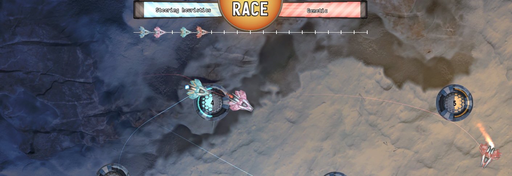
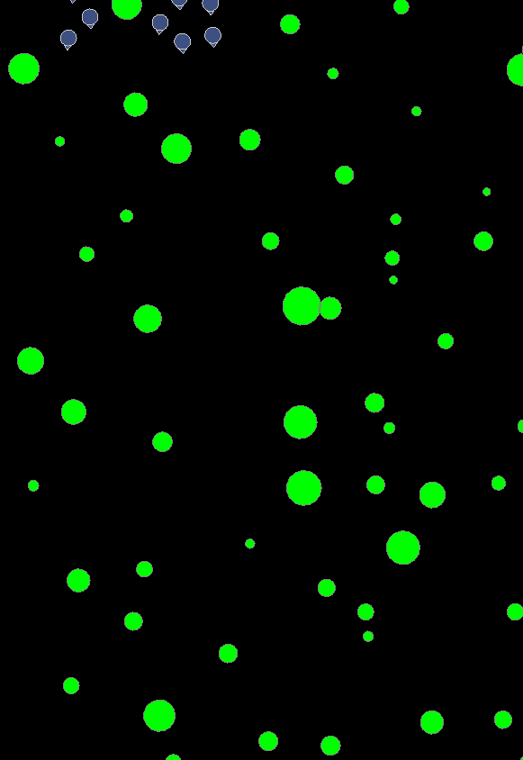
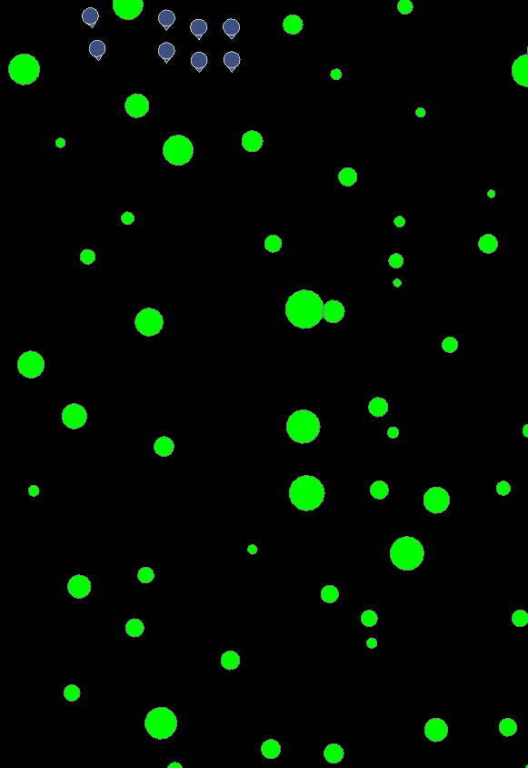

Genetic AI
Summary
| Date | 2017 - 2018 (eight months) |
| Tech | Custom engine : C++ / SFML / GLSL |
| Collaborators | Luc Chamerlat (Artist) |
Compete against different bots in this tech demo of a simple racing game.
- Artificial intelligence bots using steering behaviors and genetic algorihms
- Fully functional custom UI system
- Features VFX breakdown of particle systems and shaders
Download
The code can be found on my GitLab.
Project breakdown
Context
 During 2020 I was still working on Unity mobile games, and was looking for an introduction project to Unreal Engine and bigger games. I came across the Reforged project by chance, and decided to apply. At the time they were were searching for a dedicated pathfinding solution, and were not happy with Unreal's out-of-the-box Reciproval Velocity Avoidance system. I joined the project to fix that.
During 2020 I was still working on Unity mobile games, and was looking for an introduction project to Unreal Engine and bigger games. I came across the Reforged project by chance, and decided to apply. At the time they were were searching for a dedicated pathfinding solution, and were not happy with Unreal's out-of-the-box Reciproval Velocity Avoidance system. I joined the project to fix that.
The Battle For Middle Earth games stood out from the regular RTS genre by pushing the squad concepts from Company Of Heroes. Instead of a squad of 5 or 6 units, here most of the squads reached at least 10 units, some pushing 20 and more. Squads were commanded as a single unit : clicking any unit selected the whole squad, and you could order them to move around. The whole squad moved in formation to the target destination, and when reaching it could orient itself in a specific direction.
The game featured a simulated kind of physics between units : heavy units and magical powers can push back and knock up units, breaking their formation. Cavalry charges can do the same, but only when they reach their top speed. Players usually command armies of hundreds of units, and the original games supported 8 players in multiplayer. That's thousand of units, pathfinding, fighting and flying all over the place, in real time.
The pathfinding problem
This is of course a networking nightmare (or dream scenario, depending on your attitude towards challenge !), but also creates unique challenges for pathfinding. This gameplay effectively mixes the two main categories of pathfinding : global and local pathfinding.
For example, consider yourself going to work in the morning. You know the way : get out of the house, walk to the bus station (using the shortcut near the grocery store), ride the bus for X stops, walk to the office. This is global pathfinding : your travel plan. Yet when walking down the street, do you consider every single meter of the journey as part of the plan ? Right down to that trash can or that crack in the sidewalk you sidestep every morning, the seconds spent waiting for the light to turn green ? Of course not. This is local pathfinding : the adjustments you make on the fly.
In games we tend to do only one or the other. Mixing those two techniques is a complicated task, one that we can usually avoid. No need for complicated pathfinding ? Just do local and live with it. Have to navigate a complex map ? Use global pathfinding, and just put every single detail of the map in the plan. Imagine google maps going down to the centimeter level on your daily commute, and you get the idea. That's how most pathfinding is done in games : agents actually follow a plan that includes every tiny obstacle on their path. Lucky for us, computers are good at following incredibly detailed sequences !
But in this case, we sadly can't do this for a simple reason : squad formations. What would happen if you and twenty of your friends decided to ask Google Maps for a travel plan ? You get twenty individual plans. That's google doing the same computation twenty times, and maybe you won't get the same result ! Plus any problem that happens along the way (X wants to stop for a coffee break, Y misses the greenlight and has to wait...) has all twenty of you drifting apart more and more. This is unacceptable for the game : squads have to stick together even after they get split around like bowling balls after a cavalry charge.
The solution
In practice, that group trip will probably end up being one or two persons with the map, and the rest will be followers behind them. This was exactly my proposed solution. You don't need every single unit doing global pathfinding, taking a lot of processing power. Plus this is a game about armies fighting, most likely the path will change along the way because you round the corner and find that enemy ambush waiting for you ! Instead, we designate one unit per squad as the leader that does global pathfinding (the one with the map). Every other unit is a follower, caring only about their relative position to the leader.
The good thing about this plan is that leverages the strengths of both methods. Global pathfinding is hard on the processing power, but good with long distances and precision. Local pathfinding is fast (useful with the number of units we want) and resilient to change and obstacles.
Squads and formations
Getting the feel right
Changing formations
The biggest unknown was the local pathfinding, so we started with that. The implementation is based on the the boids technique, and borrows ideas from Entity Component System theory to make it fast enough for hundreds of units. Each unit in the squad is assigned an id, and each formation is a function that takes in input that ID and outputs the relative position to the leader.
Death & reinforcements
Units can of course die and be replaced, so formations must account for that. If a unit dies on the front line another should come to plug the hole, and new units should take their place in the rear.
Frontline reversal
This is an RTS game, and RTS players sure like clicking all over the place ! This makes for very sharp changes in direction, and the game needs to support that graciously. The first quick win to combat that was to allow the whole squad to do an about-face without mirroring their positions.
Formation correction
This is where the first major problem appeared. Units always moved forward at full speed, causing stragglers to never catch up. It made the formation look disjointed and messy, far from the neat look the original games had. This is a foreshadowing for greater problems to come. But in the meanwhile, this was fixed by adding a "corrected movement" mechanism. Units will always try to reach their relative position in the formation. If they lag too far behind that position, they get a temporary speed boost that allows them to catch up. We made the speed boost interpolate linearly : the farther you are, the more boost you get. This made for smooth movements, mimicking the way actual humans move in formation.
The more obstacles there are, the more apparent the benefits of formation correction. Here's without correction  Only after a couple trees the formation shape is lost, almost unrecognizable. And it only gets worse. Compare it for the same test, with correction. Notice how much more cohesive the squad looks, even with trees in the middle of it. You can still recognize the shape. 
Unit avoidance
Now that this works, it's time to add more squads. Unit avoidance took me a long time to get right. The basic idea is to add an avoidance force for each unit in close proximity. It then becomes a trial and error dance of tweaking the values a little, observing the results, and getting the parameters just right. The boid system is at it's best here : note how the units tend to slide around other squad formations rather than penetrate them. This is due to the avoidance force : the combination of multiple forces makes the big unit want to avoid the whole pack rather than dive in.
This is of course impossible in head-on collisions, where both squads must walk through each other. Notice how some units get temporarily stuck, but the system soon corrects itself and the formations start to reform.
The systems is very resilient, even in crowded areas.
Global Pathfinding
The global pathfinding part was in theory simple, but got more and more complexe as we began to fine tune the system. The initial plan was to create a nav mesh (as most game engines do) and use the A* algorithm to navigate it. The creation of the static geometry and its triangulation is actually quite complex, and would deserve its own explanation page. For the sake of clarity I won't get into it here (but that was a fun side project !). The two main problems I encountered was corner avoidance, and what I called "splitting geometry".
Geometry repulsion force
A* is a graph-based algorithm. It only cares whether a point is reachable or not, and by default does not consider agent width. In our case its more complex than that, since the formation could be naturally quite wide (dozen units in a line), but still fit through narrow passages by changing to a column formation. This can be fixed by simply adding another force to the boid system : the geometry force. For each unit, detect the closest static geometry and add a force steering directly away from it. This is good enough for most scenarios. The formation stays within acceptable margins even with tight corners.
Corner avoidance
The problem is, as mentionned above A* does not support changing width. This causes a problem when cornering. If the squad is walking in a line five units wide, when rounding a corner the leader must take that into account. If the leader aims to clear the corner without any margin, then some units are driven directly into the wall. This is of course unacceptable. The solution is simple in theory : just add some padding to the corners. But as always when geometry and navmeshes are concerned, in practice this can be quite complex. And remember the whole thing has to be as optimized as possible, the goal is to have dozens of units doing this on large maps !
The algorithm I used is simple because it uses geometry. I'm sure there are way more efficient ways to do this, but the goal at this stage was to prototype the look and feel, not spend months optimizing it.
- Identify all the triangle edges the path will go through (light blue) : this is the standard output of the A* algorithm when you run it on a group of connected triangles.
- Add some padding around the geometry (green).
- Draw a path from start to finish, passing through the middle of all the portals.
 This gives us the safest path : the one farthest away from the walls.
This gives us the safest path : the one farthest away from the walls.
This is a good start, but is not good enough. Now we need to smooth out all those weird turns. The smoothing algorithm is as follows.
- Starting from the last point, raycast to each point in the path. If no hits are found, finish.
- When a hit is found, find the intersection of the geometry lines that the hit found. This is the new path point.
- Cut all the previous points and replace them by this one.
- Restart the algorithm from the new point.
 Repeat until the entire path is smoothed.
Repeat until the entire path is smoothed.

This yields reasonable paths squads can follow. The padding around geometry must be adjusted per formation for best results, and is a matter of trial and error depending on unit stats (speed, size, etc). Here is an example with small padding. Observe how some units get caught on the corners and have to catch up. Same example with higher padding. The squad navigates corners better this time.
Splitting geometry
This is the biggest problem I had to face. When local pathfinding is faced with an obstacle, it has no notion of right or wrong. It only sees force, pushing it towards its goal. So what happens when they take the wrong path ? Without any external help, the stragglers will not know to backtrack to take the proper branch in the path. To solve this, I implemented a "lost unit" mechanism. If a unit strays too far and for too long from its relative position in the formation, it is considered lost. At this point it abandons the local pathfinding, and switches temporarily to global pathfinding to find its way back.
Again, the correct settings for this are found mostly through trial and error.
Scale testing
To test scaling, I roughly recreated miniature versions of some iconic maps from the original games. I then randomly spanwed squads of varying sizes and unit types, and had them move to random destinations on the map. Note that these represent a difficult navigation scenario. The game is inteded to have more open maps, where narrow passages are discouraged. This is both to make the pathfinding look the best it can, and also because RTS in tight spaces doesn't favour having many units, which was the goal for Reforged.
Networking
We decided early on that we would not bother with networking for the prototype. The goal was to make it look as best as we could, and then try to recreate it in the engine with all the networking added to it, optimizing it as much as possible.
However we did plan it out, to make sure that this wasn't doomed from the start. The idea was to implement a NetLOD system, following the assumption that while the map is huge and has many hundreds of units, the player can only fit so many on their screen. We would use the NetLOD to prioritize squads based on how close they are from the player's screen, and replicate the closer ones first. By our calculations, we could support hundreds of units by having less than a second of latency. A second might feel a lot, but we assumed that in the heat of battle you simply would not notice if the position of a few units were a little off. Your game would locally predict the position of all units, and periodically correct when receiving server updates. As long as we made sure that the lag between server updates wasn't more than a few seconds, the system should still be close enough locally that any visual differences would be minor.
Conclusion
I had a lot of fun working on this. Pathfinding is one of my favourite subjects to work with, and designing this from the ground up was a treat. Overall I am quite pleased with the results, and the Reforged team was too.
It's been a while since I left the project, but las I checked with them they were still moving ahead and recreating this prototype inside of Unreal Engine 5.